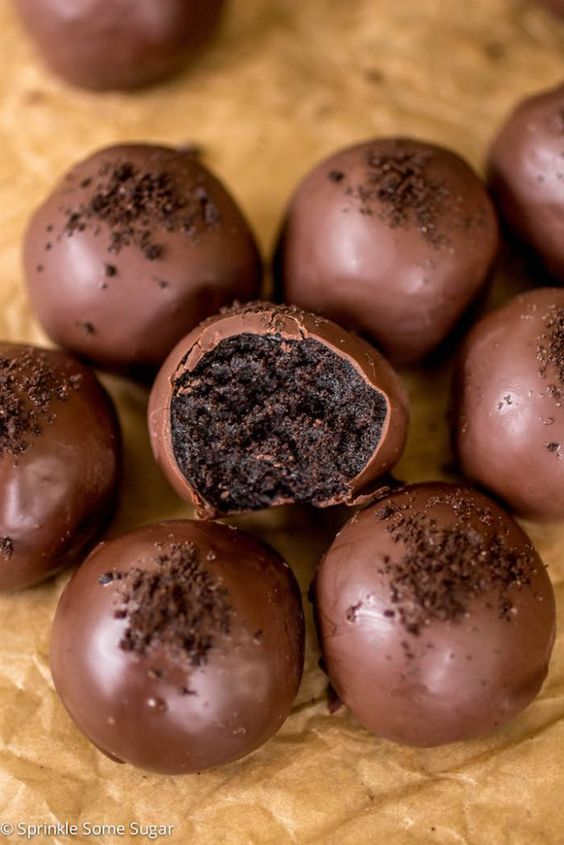
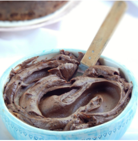
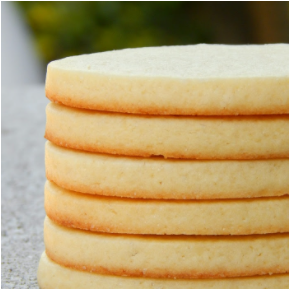
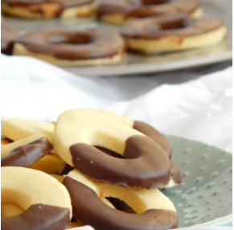

| Producto |
Ingredientes |
Procedimiento |
Trufas de oreo
 |
- 30 galletas de Oreo
- 110g de dule de leche
- 200g de chocolate semiamargo
- 3 galletas oreo trituradas (para decorar)
|
- En un procesador de alimentos mezclar las Oreos hasta obtener una miga fina. Añadir el dulce de
leche y seguir mezclando hasta que se forme una bola grande. Armar pequeñas bolas con la mezcla
de trufa y colocar en una bandeja con papel manteca
- Colocar la bandeja en la heladera por 10-15 minutos
- En una cacerola pequeña, derretir el chocolate a fuego bajo. Retirar la bandeja del refrigerador
y sumergir las trufas en el chocolate, colocandolas luego sobre un papel manteca
- Llevarlas a la heladera por otros 15 minutos, ¡y listas para disfrutar!
|
Crema Bariloche
 |
- 500 gr dulce de leche repostero.
- 200 gr manteca.
- 200 gr chocolate baño semi amargo.
- extracto de vainilla, coñac, nueces, chorrito de crema para hacerlo mousse, etc.
|
- En un bowl combinar el dulce de leche repostero (si esta muy duro ablándalo 20'' en microondas)
junto con la manteca pomada.
- Mezclar hasta que se encuentre de color más pálido.
- Verter el chocolate semi amargo (es importante que este frio, de lo contrario la mezcla se va a
separar).
- Perfumar con licor o extracto de vainilla. Podes añadirle algún fruto seco previamente tostado /
praline / etc.
- Esta crema es ideal para decorar, rellenar o cubrir tus preparaciones. Si deseas que tenga
consistencia de mousse, añadí 100 cc de crema de leche.
- Disfruta!
|
Galletitas para decorar
 |
- 210 gr manteca
- 150 gr azúcar
- 3 u yemas
- 10 ml extracto de vainilla
- 3 gr sal
- 325 gr harina 0000
|
- Batir la manteca junto con el azúcar 10', hasta obtener un cremado bien espumoso y blanco.
- Añadir las yemas y el extracto de vainilla.
- Tamizar el harina y sal. Añadirlos en dos veces.
- Dividir la masa en dos y estirar sobre papeles manteca o silpat. Congelar 2 hs.
- Cortar de manera deseada y colocarlos sobre el silpat.
- Hornear a 170°C 10' - 12'. Dejarlas reposar y pasarlas a una rejilla hasta que se enfríen por
completo.
- Conservar en frascos hasta 1 mes.
|
Anillitos de Maicena
 |
- 150 gr manteca.
- 100 gr azúcar impalpable.
- 3 u yemas.
- ralladura de limón.
- 1 cda extracto de vainilla.
- 100 gr maicena.
- 150 gr harina 0000.
- 1 cdita polvo de hornear.
- 1/1 cdita sal.
- 200 gr chocolate semi amargo.
|
- Cremar el azúcar junto con la manteca. Perfumar con el extracto de vainilla y ralladura de
limón.
- Cascar e integrar las yemas de huevo una a la vez.
- Tamizar e incorporar los ingredientes secos: harina, maicena, sal y polvo de hornear.
- Integrar y formar una masa. Freezar 1 hs.
- Cortar piezas de 5 cm de diámetro. Con la ayuda de otro cortante retirar su centro.
- Colocar en una placa con papel manteca o silpat.
- Hornear a 175°C durante 10' o hasta que su base este levemente dorada y la superficie mantenga
su color pálido.
- Enfriar y bañar en chocolate.
- Disfruta!
|